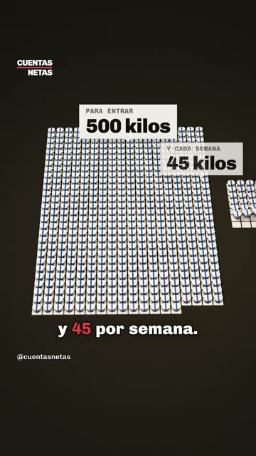
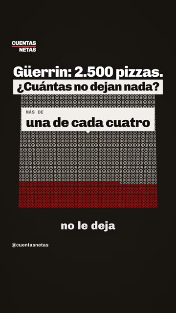
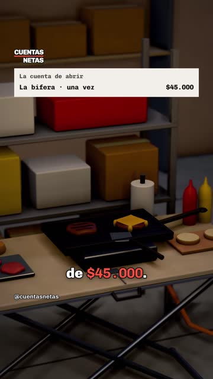
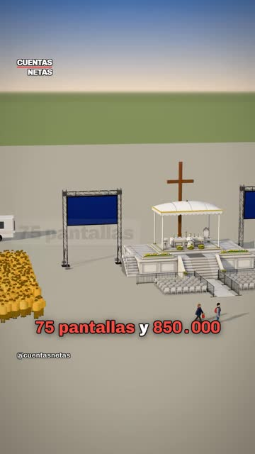
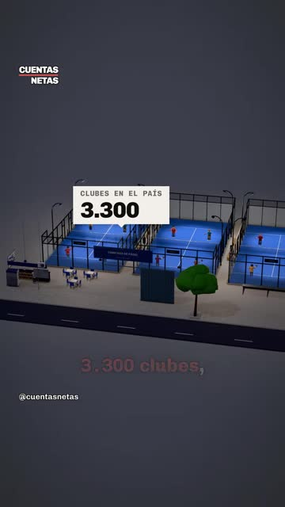
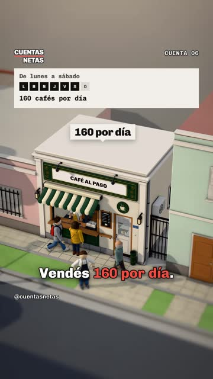
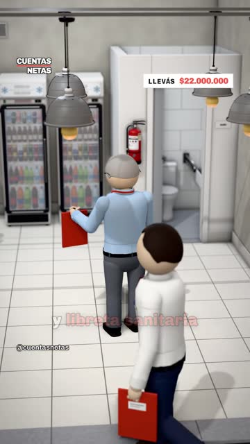
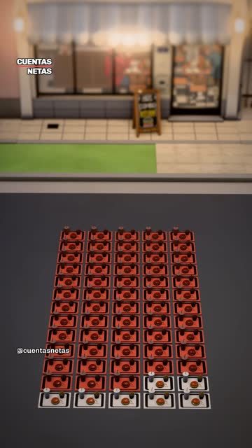

<title>Cuentas Netas desarmado</title>
<meta name="claude:viewport-fit-sides" content="cover">
<link rel="preconnect" href="https://fonts.googleapis.com">
<link rel="stylesheet" href="https://fonts.googleapis.com/css2?family=Montserrat:wght@500;700;800;900&family=Inter:wght@400;500;600;700&family=Manrope:wght@500;700;800&display=swap">
<style>
  /* Informe de consultora en negro de marca: columna de lectura, tablas que scrollean solas, fichas por video. */
  :root {
    --bg: #000000; --panel: #0B0D11; --panel2: #12151B; --line: #23272F;
    --fg: #FFFFFF; --silver: #E5E7EB; --muted: #9299A3; --soft: #BFC4CC;
    --blue: #00CFFF; --blue2: #009DFF; --blue3: #007BFF; --blue4: #0057D9;
    --ok: #00CFFF; --warn: #BFC4CC;
    --display: "Montserrat", "Helvetica Neue", Arial, sans-serif;
    --body: "Inter", "Helvetica Neue", Arial, sans-serif;
    --ui: "Manrope", "Inter", Arial, sans-serif;
    --grad-blue: linear-gradient(110deg, #0057D9 0%, #007BFF 35%, #009DFF 70%, #00CFFF 100%);
    --grad-silver: linear-gradient(180deg, #FFFFFF 0%, #E5E7EB 35%, #BFC4CC 70%, #9299A3 100%);
    color-scheme: dark;
  }
  * { box-sizing: border-box; }
  body { background: var(--bg); color: var(--silver); font-family: var(--body); font-size: 16px; line-height: 1.6; }
  .wrap { max-width: 980px; margin: 0 auto; padding-block: 40px 80px;
    padding-left: max(16px, env(safe-area-inset-left, 0px)); padding-right: max(16px, env(safe-area-inset-right, 0px)); }
  a { color: var(--blue); }
  h1, h2, h3 { font-family: var(--display); color: var(--fg); text-wrap: balance; margin: 0; }
  h1 { font-weight: 900; font-size: clamp(36px, 7vw, 68px); line-height: .98; letter-spacing: -0.02em; }
  h2 { font-weight: 800; font-size: clamp(24px, 4vw, 34px); line-height: 1.1; letter-spacing: -0.01em; }
  h3 { font-weight: 800; font-size: 19px; line-height: 1.25; }
  p { margin: 0; max-width: 68ch; }
  .eyebrow { font-family: var(--ui); font-weight: 800; font-size: 12px; letter-spacing: .16em; text-transform: uppercase; color: var(--muted); }
  .eyebrow b { color: var(--blue); font-weight: 800; }
  section { display: grid; gap: 18px; padding-top: 56px; margin-top: 56px; border-top: 1px solid var(--line); }
  .hero { display: grid; gap: 22px; }
  .silver { background: var(--grad-silver); -webkit-background-clip: text; background-clip: text; color: transparent; }
  .rule { height: 3px; width: 72px; background: var(--grad-blue); border-radius: 2px; }
  .lead { font-size: 19px; color: var(--soft); max-width: 62ch; }
  .stats { display: grid; grid-template-columns: repeat(4, minmax(0, 1fr)); gap: 1px; background: var(--line); border: 1px solid var(--line); border-radius: 14px; overflow: hidden; }
  .stat { background: var(--panel); padding: 18px 18px 16px; display: grid; gap: 2px; min-width: 0; }
  .stat .n { font-family: var(--display); font-weight: 900; font-size: clamp(24px, 4vw, 34px); color: var(--fg); font-variant-numeric: tabular-nums; }
  .stat .l { font-family: var(--ui); font-size: 13px; color: var(--muted); }
  @media (max-width: 640px) { .stats { grid-template-columns: repeat(2, minmax(0, 1fr)); } }
  .alert { border: 1px solid var(--blue4); background: linear-gradient(0deg, rgba(0,87,217,.12), rgba(0,87,217,.12)), var(--panel); border-radius: 12px; padding: 16px 18px; display: grid; gap: 6px; }
  .alert b { color: var(--fg); }
  .tag { display: inline-block; font-family: var(--ui); font-weight: 800; font-size: 11px; letter-spacing: .12em; text-transform: uppercase; padding: 3px 8px; border-radius: 6px; border: 1px solid var(--line); color: var(--soft); white-space: nowrap; }
  .tag.h { border-color: var(--blue3); color: var(--blue); }
  .tag.p { border-color: var(--soft); color: var(--fg); }
  .tag.x { border-color: var(--muted); color: var(--muted); }
  .tablebox { overflow-x: auto; border: 1px solid var(--line); border-radius: 12px; }
  table { border-collapse: collapse; width: 100%; font-size: 14px; font-variant-numeric: tabular-nums; }
  th, td { text-align: left; padding: 10px 12px; border-bottom: 1px solid var(--line); vertical-align: top; }
  th { font-family: var(--ui); font-size: 12px; letter-spacing: .08em; text-transform: uppercase; color: var(--muted); background: var(--panel); white-space: nowrap; }
  td.num, th.num { text-align: right; white-space: nowrap; }
  tr.top td { color: var(--fg); }
  tr.top td:first-child { box-shadow: inset 3px 0 0 var(--blue); }
  .bar { height: 6px; background: var(--grad-blue); border-radius: 3px; min-width: 2px; }
  .vids { display: grid; gap: 18px; }
  .vid { display: grid; grid-template-columns: 150px minmax(0, 1fr); gap: 18px; background: var(--panel); border: 1px solid var(--line); border-radius: 14px; padding: 16px; }
  .vid img { width: 150px; max-width: 100%; aspect-ratio: 9/16; object-fit: cover; border-radius: 10px; display: block; background: #111; }
  .vid .body { display: grid; gap: 10px; min-width: 0; align-content: start; }
  .vid .head { display: flex; flex-wrap: wrap; gap: 8px 12px; align-items: baseline; }
  .vid .meta { font-family: var(--ui); font-size: 13px; color: var(--muted); font-variant-numeric: tabular-nums; }
  .vid q { color: var(--fg); font-style: normal; }
  .vid dl { display: grid; grid-template-columns: 110px minmax(0, 1fr); gap: 6px 12px; margin: 0; font-size: 14.5px; }
  .vid dt { font-family: var(--ui); font-weight: 800; font-size: 12px; letter-spacing: .08em; text-transform: uppercase; color: var(--muted); padding-top: 3px; }
  .vid dd { margin: 0; }
  @media (max-width: 640px) { .vid { grid-template-columns: minmax(0, 1fr); } .vid img { width: 120px; } .vid dl { grid-template-columns: minmax(0, 1fr); } }
  .grid2 { display: grid; grid-template-columns: repeat(2, minmax(0, 1fr)); gap: 14px; }
  @media (max-width: 720px) { .grid2 { grid-template-columns: minmax(0, 1fr); } }
  .box { background: var(--panel); border: 1px solid var(--line); border-radius: 14px; padding: 18px 20px; display: grid; gap: 10px; align-content: start; min-width: 0; }
  .box ul, .box ol { margin: 0; padding-left: 20px; display: grid; gap: 8px; }
  .formula { counter-reset: f; display: grid; gap: 10px; }
  .step { display: grid; grid-template-columns: 44px minmax(0, 1fr); gap: 14px; background: var(--panel); border: 1px solid var(--line); border-radius: 12px; padding: 14px 16px; }
  .step .k { font-family: var(--display); font-weight: 900; font-size: 26px; line-height: 1; background: var(--grad-blue); -webkit-background-clip: text; background-clip: text; color: transparent; }
  .step h3 { font-size: 16.5px; margin-bottom: 4px; }
  .frames { display: grid; grid-template-columns: repeat(3, minmax(0, 1fr)); gap: 12px; }
  .frames figure { margin: 0; display: grid; gap: 6px; }
  .frames img { width: 100%; aspect-ratio: 9/16; object-fit: cover; border-radius: 10px; }
  .frames figcaption { font-size: 13px; color: var(--muted); }
  .ideas { display: grid; gap: 10px; }
  .idea { background: var(--panel); border: 1px solid var(--line); border-radius: 12px; padding: 14px 16px; display: grid; gap: 6px; }
  .idea .t { display: flex; gap: 10px; align-items: baseline; flex-wrap: wrap; }
  .idea .num { font-family: var(--display); font-weight: 900; color: var(--muted); font-variant-numeric: tabular-nums; min-width: 26px; }
  .idea h3 { font-size: 16.5px; }
  .idea .g { color: var(--fg); font-size: 15px; }
  .idea .f { display: grid; grid-template-columns: 96px minmax(0, 1fr); gap: 3px 12px; font-size: 14px; color: var(--soft); }
  .idea .f span:nth-child(odd) { font-family: var(--ui); font-weight: 800; font-size: 11px; letter-spacing: .1em; text-transform: uppercase; color: var(--muted); padding-top: 3px; }
  @media (max-width: 560px) { .idea .f { grid-template-columns: minmax(0, 1fr); } }
  .pot { font-family: var(--ui); font-weight: 800; font-size: 11px; letter-spacing: .1em; text-transform: uppercase; padding: 3px 8px; border-radius: 6px; white-space: nowrap; }
  .pot.a { background: var(--grad-blue); color: #000; }
  .pot.m { border: 1px solid var(--blue3); color: var(--blue); }
  .pot.b { border: 1px solid var(--line); color: var(--muted); }
  .top5 { display: grid; gap: 22px; }
  .guion { background: var(--panel); border: 1px solid var(--line); border-radius: 16px; padding: 22px; display: grid; gap: 16px; min-width: 0; }
  .guion .title-card { background: #fff; color: #000; font-family: var(--display); font-weight: 800; font-size: 17px; line-height: 1.2; padding: 8px 12px; border-radius: 4px; justify-self: start; }
  .guion .title-card span { display: block; font-weight: 700; font-size: 15px; color: #0057D9; }
  .guion .facts { display: flex; flex-wrap: wrap; gap: 8px; }
  .voz { border-left: 3px solid var(--blue3); padding: 4px 0 4px 16px; display: grid; gap: 10px; color: var(--fg); font-size: 16px; }
  .voz p { max-width: 70ch; }
  .voz .b { font-family: var(--ui); font-weight: 800; font-size: 11px; letter-spacing: .12em; text-transform: uppercase; color: var(--blue); display: block; margin-bottom: 2px; }
  .scenes td:first-child { white-space: nowrap; color: var(--muted); }
  .note { font-size: 13.5px; color: var(--muted); }
  .k2 { display: grid; grid-template-columns: repeat(3, minmax(0, 1fr)); gap: 10px; }
  @media (max-width: 720px) { .k2 { grid-template-columns: minmax(0, 1fr); } }
  .kpi { background: var(--panel2); border: 1px solid var(--line); border-radius: 12px; padding: 14px; display: grid; gap: 4px; }
  .kpi b { font-family: var(--display); color: var(--fg); font-size: 15px; }
  .kpi span { font-size: 13.5px; color: var(--soft); }
  .toc { display: flex; flex-wrap: wrap; gap: 8px; }
  .toc a { font-family: var(--ui); font-weight: 700; font-size: 13px; color: var(--soft); text-decoration: none; border: 1px solid var(--line); border-radius: 999px; padding: 6px 12px; }
  .toc a:hover, .toc a:focus-visible { border-color: var(--blue3); color: var(--fg); outline: none; }
  .src { font-size: 13px; color: var(--muted); display: grid; gap: 4px; }
  .src a { color: var(--soft); word-break: break-all; }
  @media (prefers-reduced-motion: reduce) { * { scroll-behavior: auto !important; } }
</style>

<main class="wrap">

<header class="hero">
  <div class="eyebrow">El Método Empresarial · <b>Investigación estratégica</b> · 14 de noviembre de 2026</div>
  <h1><span class="silver">Cuentas Netas,</span><br>desarmado</h1>
  <div class="rule"></div>
  <p class="lead">Bajé y miré los seis reels cuadro por cuadro, transcribí la voz, leí las publicaciones, revisé su web y su método. Abajo está qué hicieron, por qué creo que funcionó, qué copiaría, qué no, y cómo lo hacemos mejor con nuestra propia identidad.</p>
  <div class="stats">
    <div class="stat"><span class="n">35.100</span><span class="l">seguidores</span></div>
    <div class="stat"><span class="n">6</span><span class="l">reels publicados</span></div>
    <div class="stat"><span class="n">4 días</span><span class="l">del 10 al 13 de noviembre</span></div>
    <div class="stat"><span class="n">4,18 M</span><span class="l">vistas sumadas</span></div>
  </div>
  <div class="alert">
    <b>Corrección importante al dato de partida.</b>
    <p>El video de Grido no tiene 2.000 vistas: en la captura dice «2 mill.», o sea <b>2 millones</b>. No fue el que peor anduvo, fue el mejor por lejos: casi la mitad de todas las vistas de la cuenta y 73.798 me gusta. Esto cambia la lectura: la pregunta «¿cómo gana la marca si no te cobra nada?» es la que más funcionó.</p>
  </div>
  <nav class="toc" aria-label="Secciones">
    <a href="#perfil">Perfil</a><a href="#tabla">Números</a><a href="#videos">Los 6 videos</a><a href="#formula">La fórmula</a><a href="#hipotesis">Hipótesis</a><a href="#aprender">Aprender y no copiar</a><a href="#posicion">Nuestra posición</a><a href="#produccion">El 3D</a><a href="#ideas">30 ideas</a><a href="#cinco">Los 5 primeros</a><a href="#metricas">Métricas</a><a href="#faltan">Lo que falta</a>
  </nav>
</header>

<section id="perfil">
  <div class="eyebrow">1 · Análisis del perfil</div>
  <h2>No es una cuenta de videos: es un medio con método</h2>
  <p>La bio dice «Lo que te queda de verdad. La noticia, con la cuenta hecha y la fuente. ¿Tenés otro número? Mandalo por privado.» Son tres promesas en tres líneas: un resultado concreto (lo que te queda), una prueba (la fuente) y una invitación a participar (tu número). No dice «tips», ni «emprendé», ni «aprendé finanzas». Promete una sola cosa que cualquiera entiende.</p>
  <div class="grid2">
    <div class="box">
      <h3>Lo que hay detrás del perfil <span class="tag h">Hecho</span></h3>
      <ul>
        <li><b>Web propia</b> (cuentasnetas.com) con «la cuenta completa de cada reel», línea por línea, con supuestos y fuentes. Tiene foro y perfiles de miembros por rubro.</li>
        <li><b>Método publicado</b> («Cómo hacemos las cuentas», fechado el 9 de noviembre): separan lo observado, lo supuesto y lo calculado, y tienen una política de correcciones.</li>
        <li><b>Destacadas:</b> Cuentas · Qué es · Pedí la tuya · Comunidad · ¿Cómo?</li>
        <li><b>Mismo contenido en TikTok y YouTube</b> (@cuentasnetas).</li>
        <li>En la web: «¿Cómo se hacen estos videos? Preguntalo por privado».</li>
      </ul>
    </div>
    <div class="box">
      <h3>Por qué la promesa atrae <span class="tag p">Patrón</span></h3>
      <ul>
        <li><b>Curiosidad con plata ajena:</b> todos vimos la fila de Güerrín o un Grido en el barrio. Nadie sabe cuánto deja.</li>
        <li><b>Fantasía de emprender:</b> «¿y si pongo uno?». El video sirve aunque nunca lo abras.</li>
        <li><b>Desconfianza argentina:</b> «con la fuente» responde al «eso es verso» antes de que lo pienses.</li>
        <li><b>Es conversación de sobremesa:</b> te da un dato para repetir («Güerrín recién termina de pagar el día a las 3 y 20»).</li>
      </ul>
    </div>
  </div>
  <p class="note">La lectura de la línea «¿Cómo se hacen estos videos?» es una hipótesis: puede que la cuenta también sea la vidriera de quien produce los videos. No lo pude confirmar.</p>
</section>

<section id="tabla">
  <div class="eyebrow">3 · Tabla comparativa</div>
  <h2>Seis videos, seis días seguidos de publicación</h2>
  <p>Las vistas salen de tu captura. Los me gusta, comentarios, fechas y duraciones los bajé hoy de cada reel. Las tasas son me gusta o comentarios cada 100 vistas.</p>
  <div class="tablebox">
    <table>
      <thead><tr><th>Video</th><th>Publicado</th><th class="num">Dura</th><th class="num">Vistas</th><th style="min-width:120px"></th><th class="num">Me gusta</th><th class="num">Coment.</th><th class="num">MG / 100</th><th class="num">Com. / 100</th><th>Cierre</th></tr></thead>
      <tbody>
        <tr><td>Abrir una hamburguesería</td><td>10/11 17:33</td><td class="num">118 s</td><td class="num">536.000</td><td><div class="bar" style="width:27%"></div></td><td class="num">29.447</td><td class="num">1.659</td><td class="num">5,5</td><td class="num">0,31</td><td>Pregunta: «¿Llegás a 58?»</td></tr>
        <tr><td>Café al paso</td><td>11/11 11:03</td><td class="num">49 s</td><td class="num">231.000</td><td><div class="bar" style="width:12%"></div></td><td class="num">5.626</td><td class="num">579</td><td class="num">2,4</td><td class="num">0,25</td><td>Pregunta + «Comentá CAFÉ»</td></tr>
        <tr><td>El Papa en Córdoba</td><td>11/11 19:31</td><td class="num">56 s</td><td class="num">427.000</td><td><div class="bar" style="width:21%"></div></td><td class="num">18.446</td><td class="num">622</td><td class="num">4,3</td><td class="num">0,15</td><td>Pregunta + «Comentá PAPA»</td></tr>
        <tr class="top"><td>Grido</td><td>12/11 01:52</td><td class="num">100 s</td><td class="num">2.000.000</td><td><div class="bar" style="width:100%"></div></td><td class="num">73.798</td><td class="num">1.880</td><td class="num">3,7</td><td class="num">0,09</td><td>«Mandáselo al que…» + «Comentá HELADO»</td></tr>
        <tr><td>Canchas de pádel</td><td>13/11 15:18</td><td class="num">96 s</td><td class="num">402.000</td><td><div class="bar" style="width:20%"></div></td><td class="num">5.400</td><td class="num">373</td><td class="num">1,3</td><td class="num">0,09</td><td>«Mandáselo a…» + «Comentá PÁDEL»</td></tr>
        <tr><td>Güerrín</td><td>13/11 18:04</td><td class="num">119 s</td><td class="num">588.000</td><td><div class="bar" style="width:29%"></div></td><td class="num">20.749</td><td class="num">1.028</td><td class="num">3,5</td><td class="num">0,17</td><td>«Mandáselo al que…» + «Comentá PIZZA»</td></tr>
      </tbody>
    </table>
  </div>
  <div class="grid2">
    <div class="box">
      <h3>Lo que muestran los números <span class="tag p">Patrón</span></h3>
      <ul>
        <li><b>Los videos largos no les jugaron en contra.</b> Los tres de 100 a 119 s están entre los cuatro más vistos. El más corto (café, 49 s) es el de menos vistas.</li>
        <li><b>Marca conocida arriba:</b> Grido y Güerrín son los dos más vistos. El tercero es la hamburguesería, que no tiene marca pero tiene la historia más fácil de seguir («de una bifera de $45.000 a $29 millones»).</li>
        <li><b>Güerrín y pádel tienen menos de 2 días</b> cuando sacaste la captura: todavía están creciendo. No se pueden comparar de igual a igual con los primeros.</li>
        <li><b>Pádel</b> tiene muchas vistas y pocos me gusta (1,3 cada 100). Hipótesis: el tema atrae curiosos, pero el dato («de día, seis de cada diez canchas vacías») le importa a pocos.</li>
      </ul>
    </div>
    <div class="box">
      <h3>Los comentarios <span class="tag p">Patrón</span></h3>
      <ul>
        <li>El video con más comentarios por vista es el primero (0,31), que cierra con una pregunta que cualquiera puede contestar: «¿Llegás a 58?».</li>
        <li>Desde el segundo video usan <b>«Comentá PALABRA y te mando la cuenta completa»</b>. Es un mensaje automático por privado que lleva a la web. Junta comentarios y, de paso, una conversación con cada persona.</li>
        <li>Grido tiene 1.880 comentarios sobre 2 millones de vistas (0,09). Ahí lo que empujó fue que se compartiera, no los comentarios.</li>
      </ul>
    </div>
  </div>
</section>

<section id="videos">
  <div class="eyebrow">2 · Análisis individual</div>
  <h2>Los seis videos, uno por uno</h2>
  <div class="vids">

    <article class="vid">
      
      <div class="body">
        <div class="head"><h3>Grido: «¿Cómo gana la marca?»</h3><span class="meta">100 s · 2.000.000 vistas · 73.798 me gusta</span></div>
        <dl>
          <dt>Gancho</dt><dd><q>Para poner un Grido necesitás desde 60.000 dólares, y la marca no te cobra ni un peso de lo que vendés. Entonces, ¿cómo gana?</q> Una cifra, una marca y una contradicción en 7 segundos.</dd>
          <dt>Desarrollo</dt><dd>Mito («una franquicia así es para pocos») → dato (la marca te financia la mitad) → la respuesta: <b>te cobra en helado</b> (500 kilos para entrar y 45 por semana, de su propia fábrica) → la cuenta: para recuperar en 2 años necesitás 50 kilos por día → se compara con el promedio real (93 kilos) → giro: la mitad no es helado por kilo, y con un margen menor necesitás 64 → en un pueblo de 8.000 habitantes, cada vecino te tiene que comprar 2 kilos por año.</dd>
          <dt>Visual</dt><dd>Fajos de dólares sobre una mesada, la caja registradora con «% de tus ventas» tachado, y la imagen más fuerte: una cuadrícula de 500 potes de helado. Hay 24 cortes en 100 s, un plano cada 4 s.</dd>
          <dt>Por qué creo que explotó</dt><dd>Responde una pregunta que nadie se había hecho y que, una vez planteada, no podés dejar de querer saber. Le sirve al que sueña con una heladería, al que tiene una y al que solo toma helado. Y termina con un número fácil de repetir: «50 kilos por día».</dd>
        </dl>
      </div>
    </article>

    <article class="vid">
      
      <div class="body">
        <div class="head"><h3>Güerrín: «¿Cuántas no dejan nada?»</h3><span class="meta">119 s · 588.000 vistas · 20.749 me gusta</span></div>
        <dl>
          <dt>Gancho</dt><dd><q>Güerrín vende 2.500 pizzas por día, y más de una de cada cuatro no le deja ni un peso.</q> En el segundo 2 ya aparece una cuadrícula de 2.500 pizzas con la cuarta parte en rojo.</dd>
          <dt>Desarrollo</dt><dd>Mito («pura ganancia») → el día empieza a las 5 de la mañana: 1.300 kilos de muzzarella → harina, tomate, leña → el horno de 1932 que nunca se apagó → 120 personas → $22,5 millones por día → cada pizza cobra $41.500, pero $7.000 son IVA → hacen falta 660 pizzas → <b>«si vendiera parejo, recién a las 3 y 20 termina de pagar el día»</b>.</dd>
          <dt>Visual</dt><dd>La fachada roja, el horno con fuego, fichas de precio que restan el IVA en pantalla y un reloj del día.</dd>
          <dt>Lectura</dt><dd>Usa la marca más reconocible del rubro y el detalle de color (el horno de 1932) para que no sea solo una cuenta. Pasar la plata a una hora del día es el mejor recurso de toda la cuenta.</dd>
        </dl>
      </div>
    </article>

    <article class="vid">
      
      <div class="body">
        <div class="head"><h3>«La cuenta de abrir» una hamburguesería</h3><span class="meta">118 s · 536.000 vistas · 29.447 me gusta · 1.659 comentarios</span></div>
        <dl>
          <dt>Gancho</dt><dd><q>Con una bifera de unos 45.000 en el garage hacés hamburguesas. Ya tenés una hamburguesería.</q> Arranca en lo chico y conocido.</dd>
          <dt>Desarrollo</dt><dd>Una escalera de «Pero… así que… esa es la ___»: pero no te habilitan → alquilás ($5 M para entrar) → pero el local viene pelado → obra ($9 M) → pero el humo → equipamiento ($8 M) → pero la inspección → habilitación ($2 M) → pero no das abasto → sueldos. Cada escalón suma al ticket. Final: de $45.000 a $29 millones, y los primeros 58 combos de cada noche (de 65) pagan el local.</dd>
          <dt>Visual</dt><dd>Contador fijo arriba a la derecha («LLEVÁS $22.000.000»), ticket que se escribe línea por línea, el local en corte visto desde arriba y, al final, 65 combos con 58 en rojo.</dd>
          <dt>Lectura</dt><dd>La estructura en escalera hace que cada 8 a 10 segundos aparezca un problema nuevo: así retiene casi dos minutos. Es el que más comentarios sacó por vista, porque la pregunta del final se contesta con un número.</dd>
        </dl>
      </div>
    </article>

    <article class="vid">
      
      <div class="body">
        <div class="head"><h3>«$15.400 millones: ¿qué movieron?» (el Papa en Córdoba)</h3><span class="meta">56 s · 427.000 vistas · 18.446 me gusta</span></div>
        <dl>
          <dt>Gancho</dt><dd><q>Córdoba puso 15.400 millones para traer al Papa. ¿Qué movió esa plata?</q></dd>
          <dt>Desarrollo</dt><dd>Lo que se compró (2.000 técnicos, 75 pantallas, 850.000 botellas de agua) → la gente que vino (entre 650.000 y un millón) → lo que gastó (hotel, pasajes, un departamento de 100.000 a 200.000 la noche) → la proyección: 146.000 millones, casi 10 veces lo invertido → la comparación con España (5 veces) → «el número final llega cuando cierren las cajas».</dd>
          <dt>Visual</dt><dd>Casi sin cortes (3 en 56 s): la cámara recorre el predio con camiones, pantallas y una multitud que se multiplica.</dd>
          <dt>Lectura</dt><dd>Es el único sobre una noticia. Se subió a una conversación que ya estaba en todos lados y la contestó con números. Sirve para crecer en una semana caliente, pero envejece rápido.</dd>
        </dl>
      </div>
    </article>

    <article class="vid">
      
      <div class="body">
        <div class="head"><h3>Pádel: «4 canchas, USD 100.000. ¿Y la plata?»</h3><span class="meta">96 s · 402.000 vistas · 5.400 me gusta</span></div>
        <dl>
          <dt>Gancho</dt><dd><q>Poner cuatro canchas de pádel te cuesta unos 100.000 dólares, y un jueves a la tarde seis de cada diez están vacías.</q></dd>
          <dt>Desarrollo</dt><dd>El boom (3.300 clubes, tercer país del mundo) → <b>«pero lo medimos»</b>: revisaron 236 canchas de la Capital en la app de reservas, hora por hora → de noche se ocupan 8 de cada 10 y de día 4 → la cuenta (50 millones por mes como máximo, menos alquiler y sueldos) → «los que venden canchas dicen 10 meses; un dueño de Palermo dice 3 o 4 años» → la decisión: vender un turno más a la tarde suma 7,5 millones por mes.</dd>
          <dt>Visual</dt><dd>El club visto desde arriba, una cuadrícula de 236 círculos (las canchas medidas) y carteles con datos.</dd>
          <dt>Lectura</dt><dd>Es el video con el dato más original (lo midieron ellos) y con la enseñanza más útil para un dueño. Aun así, es el que menos gustó por vista. Hipótesis: «ocupación de la tarde» es un problema de pocos, y el gancho promete plata pero entrega un problema.</dd>
        </dl>
      </div>
    </article>

    <article class="vid">
      
      <div class="body">
        <div class="head"><h3>Café al paso: «vuelven en 10 meses, no en dos y medio»</h3><span class="meta">49 s · 231.000 vistas · 5.626 me gusta</span></div>
        <dl>
          <dt>Gancho</dt><dd><q>Abriste un café al paso con 40 millones de pesos. ¿Cuántos vasos tenés que vender para recuperarlos?</q></dd>
          <dt>Desarrollo</dt><dd>«La cuenta fácil» (10.000 vasos, dos meses y medio) contra la real ($4.000 es lo que cobrás, no lo que te queda): grano, leche y vaso, impuestos → te quedan $2.000 → la mañana paga el local y la tarde devuelve la plata → 10 meses, y en enero no vuelve nunca.</dd>
          <dt>Visual</dt><dd>Un vaso en primer plano con la ficha «EL VASO $4.000», el local en miniatura y un calendario de lunes a sábado.</dd>
          <dt>Lectura</dt><dd>La idea es muy buena («la cuenta fácil contra la real»), pero es el único sin marca, sin personaje y corto. Además el título de la portada no tiene pregunta. Fue el que menos vistas tuvo.</dd>
        </dl>
      </div>
    </article>

  </div>
  <div class="frames">
    <figure><figcaption>El contador fijo: la cuenta acumulada nunca sale de la pantalla.</figcaption></figure>
    <figure><figcaption>El número se vuelve objetos: 58 de 65 combos, en rojo.</figcaption></figure>
    <figure><figcaption>Lo mismo con 500 kilos de helado. Es el recurso que más se repite.</figcaption></figure>
  </div>
</section>

<section id="formula">
  <div class="eyebrow">4 y 6 · La fórmula reconstruida</div>
  <h2>Nueve decisiones que se repiten en los seis videos</h2>
  <p>Cada punto es algo que vi en los videos (hecho) y lo que creo que logra (hipótesis). No sé cómo distribuye Instagram internamente, así que no atribuyo causas que no puedo medir.</p>
  <div class="formula">
    <div class="step"><span class="k">1</span><div><h3>Temas: algo que todos conocen y nadie sabe cuánto deja</h3><p>Una pizzería famosa, la heladería del barrio, el pádel de moda, el café de la esquina, la visita del Papa. Siempre algo que el espectador ya vio con sus ojos y sobre lo que tiene una opinión («eso es pura ganancia»).</p></div></div>
    <div class="step"><span class="k">2</span><div><h3>Lo convierten en una pregunta con trampa</h3><p>«Marca + cifra. ¿Pregunta?»: «Grido: USD 60.000. ¿Cómo gana la marca?». La pregunta nunca es «¿cuánto gana?»: siempre trae una contradicción («no te cobra nada», «una de cada cuatro no deja nada», «seis de cada diez vacías»).</p></div></div>
    <div class="step"><span class="k">3</span><div><h3>Los primeros 3 segundos: cifra, marca y contradicción, dichos y escritos</h3><p>El título queda fijo arriba durante todo el video, en una placa blanca. Si entrás en el segundo 40, igual sabés de qué se trata.</p></div></div>
    <div class="step"><span class="k">4</span><div><h3>La curiosidad se sostiene con «casi todos creemos…» y una escalera</h3><p>Primero dicen en voz alta lo que piensa el espectador y después lo desarman de a un escalón. Cada 8 a 10 segundos aparece un costo, un «pero» o un número nuevo.</p></div></div>
    <div class="step"><span class="k">5</span><div><h3>Las cifras se vuelven cosas</h3><p>Nunca dejan un número suelto: 500 kilos son 500 potes, 58 combos son 58 platos en rojo, 236 canchas son 236 círculos. Los números van con punto de miles a la argentina y en color.</p></div></div>
    <div class="step"><span class="k">6</span><div><h3>La explicación es una cuenta que se arma en pantalla</h3><p>Hay un ticket que se escribe línea por línea o un contador que acumula («LLEVÁS $22.000.000»). Al terminar, el espectador siente que hizo la cuenta él.</p></div></div>
    <div class="step"><span class="k">7</span><div><h3>El resultado se traduce a una unidad cotidiana</h3><p>No terminan en «gana X por mes». Terminan en algo que se ve: 50 kilos por día, 58 combos por noche, las 3 y 20 de la tarde, 2 kilos por vecino. Eso es lo que la gente repite.</p></div></div>
    <div class="step"><span class="k">8</span><div><h3>Se comparte porque tiene destinatario</h3><p>«Mandáselo al que sueña con su heladería», «al que siempre te lleva a Güerrín», «a tu compañero de pádel». El video le dice al espectador a quién mandárselo.</p></div></div>
    <div class="step"><span class="k">9</span><div><h3>Seguir la cuenta tiene sentido porque hay una serie</h3><p>Los seis videos tienen el mismo formato y el mismo título fijo. Además están la web, los supuestos en el comentario fijado, «No es consejo» y «Pedí la tuya». Quien ve uno entiende que va a haber otro igual de bueno, y que puede pedirlo.</p></div></div>
  </div>
</section>

<section id="hipotesis">
  <div class="eyebrow">5 · Hipótesis sobre su crecimiento</div>
  <h2>Cómo pudieron llegar a 35.000 en cuatro días</h2>
  <div class="grid2">
    <div class="box">
      <h3>Lo más probable <span class="tag h">Hipótesis fuerte</span></h3>
      <ul>
        <li><b>Un video que explotó (Grido, 2 M)</b> y cinco que no bajaron de 200.000. Cuando alguien entra al perfil después del video viral, encuentra cinco más del mismo nivel. Eso convierte una vista en un seguidor.</li>
        <li><b>Un video por día, todos los días.</b> Cada video nuevo le da a Instagram otra oportunidad de mostrárselo a quien ya vio uno.</li>
        <li><b>Mucha producción desde el primer día:</b> no hay un período de prueba visible en el perfil.</li>
      </ul>
    </div>
    <div class="box">
      <h3>Lo que no podemos descartar <span class="tag x">Sin datos</span></h3>
      <ul>
        <li>Publicidad paga, colaboraciones o empuje de cuentas grandes (la sigue gente con muchos seguidores, pero eso solo no prueba nada).</li>
        <li>Tráfico que llega desde TikTok o YouTube.</li>
        <li>Videos borrados antes de la captura.</li>
        <li>Un equipo detrás: el nivel de 3D, la web con foro y el método publicado no parecen de una sola persona en una semana.</li>
      </ul>
    </div>
  </div>
</section>

<section id="aprender">
  <div class="eyebrow">6 y 7 · Qué aprender y qué no copiar</div>
  <h2>Copiamos la mecánica, no la cara</h2>
  <div class="grid2">
    <div class="box">
      <h3>Lo que adoptamos</h3>
      <ul>
        <li>Título fijo arriba durante todo el video.</li>
        <li>Gancho: cifra + algo conocido + contradicción, en menos de 3 segundos.</li>
        <li>«Casi todos creemos…» y una escalera de «pero…».</li>
        <li>Números que se vuelven objetos (cuadrículas, pilas, relojes).</li>
        <li>Contador o ticket que acumula la cuenta.</li>
        <li>Cierre en una unidad cotidiana y «Mandáselo al que…».</li>
        <li>Supuestos y fuentes en el comentario fijado.</li>
        <li>Un video por día cuando arranquemos, con varios hechos de antemano.</li>
      </ul>
    </div>
    <div class="box">
      <h3>Lo que no copiamos</h3>
      <ul>
        <li><b>Su identidad:</b> placas blancas con rojo, el nombre «la cuenta», la promesa «lo que te queda». Nosotros somos negro, plata y azul.</li>
        <li><b>Sus temas:</b> no hacemos Grido, Güerrín, pádel, café ni hamburguesería otra vez.</li>
        <li><b>Ser una cuenta de noticias:</b> la noticia la usamos de vez en cuando, no como base.</li>
        <li><b>Logos ajenos en primer plano:</b> nombramos marcas para informar, pero no armamos el video sobre su logo.</li>
        <li><b>Cuentas sin enseñanza:</b> su video termina en el número. El nuestro termina en la decisión que podés copiar.</li>
      </ul>
    </div>
  </div>
</section>

<section id="posicion">
  <div class="eyebrow">8 · Posicionamiento recomendado</div>
  <h2>Ellos te muestran la cuenta. Nosotros, la decisión que la hace funcionar.</h2>
  <p>Cuentas Netas responde «¿cuánto queda?». El Método Empresarial responde «¿por qué lo hacen así, y qué podés copiar vos?». Usamos la misma curiosidad (plata, marcas conocidas, contradicción), pero cada video termina en una regla que se puede aplicar o discutir. Eso es lo que la gente guarda.</p>
  <div class="grid2">
    <div class="box">
      <h3>Bio propuesta</h3>
      <p style="color:var(--fg)">Lo que hay detrás de los negocios que funcionan.<br>Una decisión, la cuenta y la regla que podés copiar.<br>¿Qué negocio querés que desarme? Escribime.</p>
    </div>
    <div class="box">
      <h3>Tres series fijas</h3>
      <ul>
        <li><b>«Detrás de»:</b> un negocio que todos conocen y la decisión que explica su plata (el cine, el gimnasio, la estación de servicio).</li>
        <li><b>«Martín y Lucas»:</b> dos negocios iguales con una sola decisión distinta, la cuenta de cada uno y quién termina mejor. Es nuestro formato propio y ya está probado con el reel 01.</li>
        <li><b>«La regla»</b> (cierre de todos los videos): una placa final con un número para guardar, como «con 40 % de margen, un 20 % de descuento te obliga a vender el doble».</li>
      </ul>
    </div>
  </div>
</section>

<section id="produccion">
  <div class="eyebrow">Producción</div>
  <h2>El 3D: dónde estamos y cómo los superamos</h2>
  <p>Su nivel es alto: miniaturas con desenfoque de fondo (efecto maqueta), personajes sin cara que caminan y trabajan, locales abiertos en corte, luz cálida y escenas de noche. Parece hecho con un programa 3D profesional y personajes ya armados. Nuestro reel 01 está hecho con código en el navegador (Three.js) y con objetos construidos a mano. Funciona, pero los personajes y los objetos se ven más simples.</p>
  <div class="grid2">
    <div class="box">
      <h3>Qué cambio para llegar a su nivel</h3>
      <ol>
        <li>Paquetes 3D gratuitos de uso libre (personajes animados que caminan, atienden y saludan, más locales, muebles y comida), en lugar de cubos hechos a mano.</li>
        <li>Efecto maqueta: desenfoque de fondo, sombras suaves y luz cálida.</li>
        <li>Locales abiertos en corte, vistos desde arriba.</li>
        <li>Nuestras fichas de marca (negro, plata y azul) pegadas a los objetos, con un contador fijo.</li>
      </ol>
    </div>
    <div class="box">
      <h3>Antes del primer video: una prueba de 10 segundos</h3>
      <p>Propongo armar una sola escena (por ejemplo, el cine con el pochoclo y la ficha «LE QUEDAN 80 DE CADA 100»), renderizarla en GitHub y compararla al lado de un cuadro de Cuentas Netas. Si no está a la altura, lo vemos antes de gastar un video entero. No te prometo que lo supere sin probarlo.</p>
    </div>
  </div>
</section>

<section id="ideas">
  <div class="eyebrow">9 · Treinta ideas</div>
  <h2>30 videos posibles, ordenados por potencial</h2>
  <p>El potencial es una hipótesis, no una predicción. Las cifras que se mencionan están para investigar: ninguna va a un video sin fuente.</p>
  <div class="ideas" id="ideasList"></div>
</section>

<section id="cinco">
  <div class="eyebrow">10 · Los cinco primeros videos</div>
  <h2>Los cinco que haría primero, con guion completo</h2>
  <p>Elegí cuatro de la serie «Detrás de» con marcas o lugares que todos conocen y datos públicos verificables (balances de empresas que cotizan en bolsa), y uno de «Martín y Lucas» que no depende de ningún dato externo. Cada cifra tiene su fuente al pie de cada guion.</p>
  <div class="top5" id="top5"></div>
</section>

<section id="metricas">
  <div class="eyebrow">12 · Métricas y aprendizaje</div>
  <h2>Cómo vamos a saber qué funciona</h2>
  <p>Las vistas solas engañan: pádel tuvo 402.000 y casi nadie le puso me gusta. Medimos cada video con cinco números, todos por cada 1.000 vistas, para poder comparar videos de distinto tamaño. Instagram los da en las estadísticas de cada reel.</p>
  <div class="k2">
    <div class="kpi"><b>Retención a los 3 s</b><span>Qué porcentaje no pasó de largo. Mide el gancho y el título.</span></div>
    <div class="kpi"><b>Tiempo promedio / duración</b><span>Qué parte del video ve la persona promedio. Mide el desarrollo.</span></div>
    <div class="kpi"><b>Compartidos cada 1.000</b><span>Es el número que más nos importa: mide si el video tiene destinatario.</span></div>
    <div class="kpi"><b>Guardados cada 1.000</b><span>Mide si «La regla» valió la pena.</span></div>
    <div class="kpi"><b>Seguidores nuevos cada 1.000</b><span>Si convierte. Junto con las visitas al perfil, dice si el perfil retiene.</span></div>
    <div class="kpi"><b>Comentarios cada 1.000</b><span>Mide si la pregunta del final se puede contestar.</span></div>
  </div>
  <div class="grid2">
    <div class="box">
      <h3>Planilla por video</h3>
      <p>Una fila por reel con: serie, tema, tipo de gancho, duración, hora de publicación y los seis números de arriba a las 24 h, a las 72 h y a los 7 días. Después de 10 videos se ve qué serie, qué gancho y qué largo rinde más.</p>
    </div>
    <div class="box">
      <h3>Cómo probamos ganchos</h3>
      <ul>
        <li><b>Reels de prueba de Instagram:</b> el mismo video con dos ganchos distintos se muestra primero a gente que no te sigue, y publicamos el que retiene más.</li>
        <li><b>Una sola variable por vez:</b> mismo tema y misma duración, cambia solo el gancho (pregunta contra cifra, o marca contra situación).</li>
        <li><b>Decidimos a las 72 h,</b> no a la hora: Güerrín y pádel muestran que un video sigue creciendo días después.</li>
      </ul>
    </div>
  </div>
</section>

<section id="faltan">
  <div class="eyebrow">13 · Lo que no pude verificar</div>
  <h2>Qué datos faltan para confirmar las hipótesis</h2>
  <div class="grid2">
    <div class="box">
      <h3>De Cuentas Netas</h3>
      <ul>
        <li>Retención, alcance y origen de las vistas de cada video (solo lo ve el dueño).</li>
        <li>Si hubo publicidad paga o colaboraciones.</li>
        <li>La curva de seguidores día por día.</li>
        <li>Qué dicen los comentarios: Instagram no me los muestra sin iniciar sesión.</li>
        <li>Las vistas de TikTok y YouTube.</li>
        <li>Si hubo videos antes de estos seis.</li>
      </ul>
    </div>
    <div class="box">
      <h3>De los cinco guiones</h3>
      <ul>
        <li>Las comisiones y tarifas de envío de Mercado Libre salen de un blog especializado. Hay que confirmarlas en la Central de Vendedores.</li>
        <li>El 8 % que gana el estacionero es un dato de la industria sin fecha clara.</li>
        <li>El «4 de cada 10 socios fue en 30 días» de Planet Fitness sale de una nota sobre la llamada con inversores de 2022, no de una cita textual.</li>
        <li>No hay un precio oficial del combo de pochoclo: uso el de una nota de julio de 2026.</li>
      </ul>
    </div>
  </div>
  <div class="src">
    <b style="color:var(--soft)">Fuentes del análisis</b>
    <span>Reels analizados (bajados el 14/11/2026): <a href="https://www.instagram.com/reel/Dfn6v4iGbcD/">Grido</a> · <a href="https://www.instagram.com/reel/DfsOtvNjHxH/">Güerrín</a> · <a href="https://www.instagram.com/reel/Dfkc0MnDThq/">Hamburguesería</a> · <a href="https://www.instagram.com/reel/DfnPMm8CfFu/">Papa</a> · <a href="https://www.instagram.com/reel/Dfr7tDKGWna/">Pádel</a> · <a href="https://www.instagram.com/reel/DfmU_EeiChR/">Café</a></span>
    <span>Web y método: <a href="https://cuentasnetas.com/links">cuentasnetas.com/links</a> · <a href="https://cuentasnetas.com/cuentas/como-abrimos-una-cuenta">Cómo hacemos las cuentas</a></span>
  </div>
</section>

</main>

<script>
const IDEAS = [
 // [título, gancho, pregunta, desarrollo, dato a investigar, giro, por qué interesa, potencial a/m/b]
 ["El cine no gana con la entrada", "«La entrada sale $17.800. El combo, más de $20.000. Y el que le deja plata al cine no es la entrada.»", "¿De qué vive un cine?", "La película se alquila: más de la mitad de la entrada se va al estudio. El pochoclo cuesta 20 de cada 100.", "Balance de Cinemark 2025 (verificado)", "El candy vende menos que las entradas y deja casi un 50 % más.", "Todos fuimos al cine y todos pagamos el combo pensando «qué caro».", "a"],
 ["El gimnasio gana con los que no van", "«Tu gimnasio tiene 3.300 socios. Adentro entran 300.»", "¿Cómo entra todo el mundo?", "Socios por sede, capacidad, cuántos van de verdad, la permanencia de 12 meses.", "Smart Fit (balance y web), Planet Fitness, estudio de 2006 (verificado)", "El plan más barato es el que te ata 12 meses.", "Medio país paga un gimnasio y no va.", "a"],
 ["Envío gratis: ¿quién lo paga?", "«Comprás algo de $15.000 y te llega gratis. Alguien pagó ese envío.»", "¿Quién paga el envío gratis?", "El umbral bajó, el vendedor paga la mitad arriba de $33.000, a la empresa le come margen.", "Resultados de Mercado Libre 3T26 (verificado); tarifas de vendedores (a confirmar)", "No gana con tu paquete: gana con que vuelvas.", "Todos compran ahí. Muchos venden ahí.", "a"],
 ["La estación de servicio vive del café", "«Cargás un tanque de $105.000. A la estación le queda lo que vale un café con medialunas.»", "¿Cuánto gana una estación con la nafta?", "Impuestos, petrolera, la comisión del estacionero y la tienda.", "Precio y comisión (Surtidores), YPF Full, NACS (verificado con salvedades)", "La nafta trae el auto, el mostrador paga la estación.", "Cargamos nafta todas las semanas y nunca lo pensamos.", "a"],
 ["Bajaste 20 %: tenés que vender el doble", "«Martín puso 20 % de descuento. Vendió más y ganó menos.»", "¿Cuánto más tenés que vender si bajás el precio?", "Martín y Lucas con la misma remera; la tabla 10 / 20 / 30 %.", "Pura aritmética (sin datos externos)", "Con 30 % de descuento tenés que vender 4 veces más.", "Todo comerciante hizo un descuento alguna vez.", "a"],
 ["Cuotas sin interés: ¿quién paga el interés?", "«Doce cuotas sin interés. El interés existe: alguien lo paga.»", "¿Las cuotas sin interés son gratis?", "El comercio paga el costo de financiar y lo mete en el precio de lista.", "Costo de financiación de 3, 6 y 12 cuotas para el comercio en 2026", "El que paga de contado sin descuento paga el interés de otro.", "Es la forma de comprar argentina.", "a"],
 ["Por qué la leche está al fondo del súper", "«Entraste por leche. Saliste con seis cosas.»", "¿Por qué lo básico siempre está lejos?", "El recorrido, las góndolas a la altura de los ojos que se alquilan, las cabeceras.", "Estudios de compra no planificada; cobro de exhibición a las marcas", "La góndola es un alquiler: la marca paga por estar a tu altura.", "Pasa en todas las compras.", "a"],
 ["Boca y River: ¿socios o entradas?", "«River tiene más de 300.000 socios. ¿Eso deja más que llenar el Monumental?»", "¿De qué vive un club grande?", "Cuota social, entradas, TV, sponsors y venta de jugadores, según el balance.", "Memorias y balances públicos de los clubes", "La plata grande no está en el partido.", "Fútbol: lo comparte todo el mundo.", "a"],
 ["¿Por qué el pasaje sube cuando lo mirás dos veces?", "«Miraste el vuelo a la mañana: $180.000. A la noche: $240.000.»", "¿Te espían para subirte el precio?", "Precios por tramos: los primeros asientos baratos se agotan. El mito de las cookies.", "Cómo venden los tramos las aerolíneas; estudios sobre el mito", "No te miran a vos: miran cuántos asientos quedan.", "Todos lo sospechamos.", "a"],
 ["La valija que paga el vuelo", "«El pasaje low cost sale menos que la valija.»", "¿Cómo gana una low cost si el pasaje es tan barato?", "Ingresos extra: valija, asiento, embarque.", "Informes de las low cost sobre lo que cobran aparte del pasaje", "El pasaje es el anzuelo, lo extra es el negocio.", "Viajeros y quien sueña con viajar.", "m"],
 ["McDonald's es una inmobiliaria", "«McDonald's vende 69 millones de hamburguesas por día y gana con el alquiler.»", "¿De qué vive de verdad?", "Franquicias, alquiler del local y el franquiciado de Latinoamérica.", "Balance de McDonald's y de Arcos Dorados", "En Argentina el que maneja la marca es una empresa que cotiza aparte.", "Marca mundial con un dato local.", "m"],
 ["Mercado Pago te paga: ¿de dónde sale?", "«Dejás la plata en la cuenta y todos los días te da un poco más.»", "¿Quién te paga ese rendimiento?", "Dónde se invierte esa plata y qué se queda la empresa.", "Rendimiento vigente y en qué invierte el fondo", "Te paga con lo que gana prestando tu plata.", "Millones de usuarios. Hay que contarlo sin dar consejos de inversión.", "m"],
 ["La remera de $3.000 que llega de China", "«Una remera cruza el mundo y te sale menos que un café.»", "¿Cómo puede ser tan barata?", "Fábrica, envío por paquete chico, régimen de courier, volumen.", "Reglas del courier en 2026; costos de envío", "Lo barato es el envío que no paga lo que pagaría un contenedor.", "Tema caliente para el comercio local.", "a"],
 ["Un recital en River: ¿cuánto deja?", "«80.000 personas, tres noches. ¿Cuánto se lleva el artista?»", "¿Dónde va la plata de un estadio lleno?", "Entradas, cargos, productora, estadio, impuestos.", "Capacidad, precios y lo que se sabe de cómo se reparte", "El artista no es el que más gana por entrada.", "Se puede subir a la noticia cuando hay un recital grande.", "a"],
 ["La venta de un jugador de US$ 20 M", "«Lo vendieron por 20 millones de dólares. Al club le entraron bastante menos.»", "¿Dónde va la plata de un pase?", "Porcentajes del pase, la parte de los clubes formadores, impuestos y comisiones.", "Reglamento FIFA; casos públicos", "Hay clubes que cobran sin haber jugado ese partido.", "Fútbol, otra vez.", "m"],
 ["El kiosco que abre 24 horas", "«A las 4 de la mañana vende un chicle. ¿Por qué no cierra?»", "¿Le conviene abrir de noche?", "Costo fijo contra costo de una hora más.", "Cuánto cuesta una hora extra (sueldo de convenio), ventas nocturnas", "El alquiler ya está pagado: la noche solo tiene que pagar al que atiende.", "Lección de costo fijo, sin teoría.", "m"],
 ["Facturar el doble y ganar menos", "«Martín facturó el doble que Lucas. Y Lucas ganó más.»", "¿Vender más es ganar más?", "Margen de contribución y volumen.", "Aritmética", "La facturación es vanidad, el margen es el sueldo.", "Mito del emprendedor.", "m"],
 ["Vendió todo y se quedó sin plata", "«A Martín le fue tan bien que se fundió.»", "¿Cómo se funde alguien que vende?", "Cobra a 60 días, paga a 30: el que más crece necesita más caja.", "Aritmética con plazos típicos de tarjeta y proveedores", "Crecer cuesta plata antes de dar plata.", "Paradoja que deja con la boca abierta.", "a"],
 ["El dueño que trabaja gratis", "«Martín no se paga sueldo. Su negocio da pérdida y no lo sabe.»", "¿Tu negocio gana o trabajás gratis?", "Ponerle precio a tus horas.", "Sueldo de convenio equivalente", "Si sacás tu sueldo, el negocio da cero.", "Le pasa a casi todo el que tiene un negocio chico.", "m"],
 ["Subir el precio y vender más", "«Martín subió el precio un 30 %. Vendió más.»", "¿Puede vender más algo más caro?", "El precio como señal de calidad, el plato caro que hace ver barato al resto.", "Estudios de precio de referencia (con fuente)", "El plato más caro de la carta no está para venderse.", "Contraintuitivo, se guarda.", "m"],
 ["Netflix sube y no te vas", "«Subió otra vez. Y vos seguís.»", "¿Por qué no te das de baja?", "Lo que cuesta irse, lo que perdés, los impuestos que se suman al precio.", "Precio en Argentina con impuestos en 2026", "Te cobra lo que cuesta acordarte de cancelar.", "Todos tenemos uno.", "m"],
 ["Un Airbnb en Palermo contra alquilarlo", "«El mismo departamento: $900.000 por mes alquilado o ¿cuánto por noche?»", "¿Conviene el alquiler temporario?", "Ocupación, comisión, limpieza, impuestos.", "Ocupación y tarifa media en Buenos Aires; rentabilidad del alquiler común (Zonaprop)", "Con menos de X noches por mes, gana el alquiler común.", "Ahorristas y propietarios.", "m"],
 ["El alfajor de $1.500: ¿quién se queda con qué?", "«De un alfajor de $1.500, a la fábrica le llega mucho menos.»", "¿Cómo se reparte el precio?", "Fábrica, distribuidor, kiosco, impuestos.", "Márgenes del canal kiosco", "El que más gana no es el que lo fabrica.", "Cotidiano y muy argentino.", "m"],
 ["Por qué la farmacia está en todas las esquinas", "«Tres farmacias en dos cuadras. Y las tres siguen abiertas.»", "¿Cómo sobreviven tantas?", "Remedios, perfumería, obras sociales.", "Márgenes y cobro a obras sociales", "El remedio trae a la gente, la perfumería deja la plata.", "Mecanismo parecido al de la estación, con otro rubro.", "b"],
 ["La cochera del centro", "«Una cochera en el centro cobra $3.000 la hora. ¿Gana más con la hora o con el mes?»", "¿Qué conviene: por hora o por mes?", "Ocupación por hora contra plaza mensual fija.", "Tarifas en CABA; ocupación", "La plata segura está en el que paga por mes.", "Útil y sencillo.", "b"],
 ["El Hot Sale: ¿descuento real?", "«50 % de descuento. Sobre un precio que subió la semana anterior.»", "¿Los descuentos son reales?", "Cómo se mide un precio de referencia, los controles de la cámara.", "Informes de la cámara de comercio electrónico y precios relevados", "El descuento real se mide contra el precio de un mes antes.", "Estacional: solo funciona en la semana del evento.", "m"],
 ["El cajero automático: ¿cuánto cuesta sacar plata?", "«Sacar plata del cajero te puede costar más que un café.»", "¿Quién gana con cada extracción?", "Redes de cajeros, comisiones, costo de llevar el efectivo.", "Comisiones vigentes por extracción", "El efectivo es caro de mover.", "Cotidiano.", "b"],
 ["La máquina expendedora de la oficina", "«Una máquina que vende gaseosas y no tiene empleados.»", "¿Cuánto deja?", "Margen por unidad, alquiler del lugar, reposición.", "Costos del rubro", "El que gana es el dueño del pasillo.", "Microemprendimiento posible.", "b"],
 ["Precio de reposición (la inflación)", "«Martín vendió todo y no le alcanzó para volver a comprar lo mismo.»", "¿Vender a lo que pagaste te hace perder?", "Costo histórico contra costo de reposición.", "Aritmética con inflación mensual de 2026 (INDEC)", "Cada venta le achicaba el negocio.", "Es del reel 01, pero solo: probado y argentino.", "m"],
 ["La noticia de la semana con la cuenta hecha", "Depende de la noticia («El aguinaldo: ¿a dónde se va?»)", "Variable", "Un cupo libre por semana para subirse a lo que se está hablando.", "Lo que corresponda a la noticia", "Siempre una decisión, no solo el número.", "Te sube a una conversación que ya está en todos lados, como el video del Papa.", "m"]
];
const POT = {a:["Alto","a"], m:["Medio","m"], b:["Bajo","b"]};
const list = document.getElementById("ideasList");
IDEAS.forEach((r, i) => {
  const d = document.createElement("article"); d.className = "idea";
  d.innerHTML = `<div class="t"><span class="num">${String(i+1).padStart(2,"0")}</span><h3>${r[0]}</h3><span class="pot ${POT[r[7]][1]}">Potencial ${POT[r[7]][0].toLowerCase()}</span></div>
  <div class="g">${r[1]}</div>
  <div class="f"><span>Pregunta</span><span>${r[2]}</span><span>Historia</span><span>${r[3]}</span><span>Dato</span><span>${r[4]}</span><span>Giro</span><span>${r[5]}</span><span>Por qué</span><span>${r[6]}</span></div>`;
  list.appendChild(d);
});

const TOP5 = [
 {
  serie: "Detrás de · 01", t1: "Cine: $17.800 la entrada.", t2: "¿Y la plata?", dur: "≈ 70 s",
  voz: [
   ["Gancho", "Una entrada al cine sale diecisiete mil ochocientos pesos. El combo de pochoclo, más de veinte mil. Y lo que le deja plata al cine… no es la entrada."],
   ["Mito", "Casi todos creemos que el cine vive de las películas. Pero la película no es del cine: la alquila."],
   ["La cuenta 1", "Por cada dólar que vende en entradas, Cinemark le pasa a los estudios cincuenta y siete centavos. En Latinoamérica, cincuenta y uno. Y la semana del estreno, el estudio se lleva más."],
   ["La cuenta 2", "Ahora el pochoclo. Maíz, aceite, el balde, la gaseosa: de cada dólar que vende en el candy, la mercadería le cuesta veinte centavos. Le quedan ochenta."],
   ["Tensión", "El año pasado, Cinemark vendió mil quinientos cuarenta millones de dólares en entradas y mil doscientos veinte en candy. El candy vende menos… y le deja casi un cincuenta por ciento más."],
   ["Ojo", "Eso todavía no es ganancia: faltan las salas, los sueldos, la luz y los impuestos. Pero muestra dónde está el negocio."],
   ["Giro", "La película trae a la gente. El pochoclo paga la sala."],
   ["La regla", "Si tu producto principal deja poco, preguntate cuál es tu pochoclo: lo que el cliente suma cuando ya está adentro."],
   ["Cierre", "Mandáselo al que nunca entra al cine sin combo. Y seguime para más estrategias como esta."]
  ],
  escenas: [
   ["0–4 s","Fila de un cine de noche, en miniatura. Ficha «LA ENTRADA $17.800». Un balde de pochoclo cae al lado con «EL COMBO $20.160».","Corte seco"],
   ["4–10 s","Rollo de película saliendo de un camión con el cartel «ESTUDIO». La sala se ve en corte.","Barrido lateral"],
   ["10–20 s","Una entrada se parte: 57 % vuela hacia el camión del estudio y queda 43 % en la boletería. Contador fijo «AL CINE LE QUEDA».","La cámara sigue a la entrada"],
   ["20–30 s","El candy en corte: máquina de pochoclo y balde. Una cuadrícula de 100 granos con 20 en gris y 80 en azul.","Zoom al balde"],
   ["30–42 s","Dos pilas de billetes: entradas (más alta) y candy (más baja). Encima, lo que deja cada una: la del candy pasa a la otra.","Paneo vertical sobre las pilas"],
   ["42–50 s","Ficha «NO ES GANANCIA» y la factura de luz y los sueldos caen sobre las pilas.","Corte"],
   ["50–60 s","Toma aérea: la gente entra por la película y sale con baldes. «LA PELÍCULA TRAE. EL POCHOCLO PAGA.»","Grúa hacia arriba"],
   ["60–70 s","Placa «LA REGLA» y cierre de marca con «+ SEGUIME».","Fundido a negro"]
  ],
  textos: "Título fijo: «Cine: $17.800 la entrada. ¿Y la plata?» · Fichas: LA ENTRADA $17.800 · EL COMBO $20.160 · AL ESTUDIO 57 % · LE CUESTA 20 DE CADA 100 · ENTRADAS US$ 1.545 M · CANDY US$ 1.227 M · NO ES GANANCIA",
  sonido: "Proyector que arranca (gancho), pochoclo que revienta en cada cifra del candy, caja registradora en la comparación, golpe grave en el giro.",
  musica: "Pulso electrónico sobrio a 100–110 BPM, sin letra, que baja durante la cuenta y sube en el giro.",
  tension: "La comparación de las dos pilas: «vende menos y deja casi un 50 % más».",
  fuentes: "Cinemark, resultados 2025 (8-K, feb. 2026): entradas US$ 1.544,7 M; candy US$ 1.227,2 M; películas 56,8 %; insumos 19,6 %; Latinoamérica 51,4 % y 22,8 %. Precios: Focus Market vía Noticias NQN (CABA, julio de 2026) y Sitio Andino (combo individual $20.160, julio de 2026)."
 },
 {
  serie: "Detrás de · 02", t1: "Gimnasio: 3.300 socios.", t2: "¿Dónde entran?", dur: "≈ 75 s",
  voz: [
   ["Gancho", "Una sede de una cadena grande de gimnasios tiene más de tres mil trescientos socios. Adentro, por norma, entran unas trescientas personas a la vez. ¿Cómo cierra?"],
   ["Mito", "Casi todos creemos que el gimnasio gana con los que van todos los días. Es al revés."],
   ["Dato", "Smart Fit tiene más de cincuenta mil socios en unas quince sedes del país. Más de tres mil trescientos por sede. Si fueran todos juntos, quedarían diez afuera por cada uno adentro."],
   ["Tensión", "Pero no van. En Estados Unidos el socio promedio va una vez y media por semana. Y en la cadena más grande de allá, según contó la empresa, en un mes seis de cada diez no fueron nunca."],
   ["Dato extra", "Un estudio midió algo peor: los que pagaban cuota mensual iban tan poco que cada visita les salía más cara que el pase suelto."],
   ["La cuenta", "Tres mil trescientos socios a cuarenta y siete mil pesos son más de ciento cincuenta millones por mes. Eso es lo que factura, no lo que gana: falta alquiler, máquinas, luz y sueldos."],
   ["Giro", "Y mirá los planes: el más barato te pide doce meses de permanencia. El que te deja irte cuando quieras es más caro. Te cobran la libertad de irte."],
   ["La regla", "Un gimnasio no vende máquinas: vende la intención de ir. Si tu negocio cobra por mes, la plata está en que no te den de baja, no en que vengan todos los días."],
   ["Cierre", "Mandáselo al que paga el gimnasio desde enero. Y seguime para más estrategias como esta."]
  ],
  escenas: [
   ["0–5 s","Gimnasio en corte visto desde arriba, con 30 personas. Ficha «SOCIOS 3.300». Arriba aparece «ENTRAN ≈ 320».","Grúa hacia abajo"],
   ["5–15 s","La puerta del gimnasio y una fila de miniaturas que da la vuelta a la manzana (diez afuera por cada uno adentro).","Travelling por la fila"],
   ["15–28 s","Un calendario de 30 días con 100 figuritas: 60 se quedan grises en el sillón y 40 caminan al gimnasio.","Corte"],
   ["28–36 s","Un ticket de pase suelto US$ 10 al lado de una cuota «POR VISITA US$ 17».","Zoom"],
   ["36–48 s","Una pila de billetes crece hasta «$155 M POR MES». Encima caen el alquiler, las máquinas y la luz con la ficha «NO ES GANANCIA».","Paneo vertical"],
   ["48–60 s","Tres carteles de planes: el más barato con un candado de «12 MESES» y el sin permanencia más caro.","Barrido"],
   ["60–75 s","Placa «LA REGLA» y cierre de marca.","Fundido"]
  ],
  textos: "Título fijo: «Gimnasio: 3.300 socios. ¿Dónde entran?» · Fichas: SOCIOS POR SEDE +3.300 · ENTRAN ≈ 320 · 6 DE CADA 10 NO FUERON · POR VISITA US$ 17 · FACTURA $155 M/MES · 12 MESES",
  sonido: "Pesas que caen (gancho), molinete de entrada por cada socio, silbato en el giro de la permanencia.",
  musica: "Beat de entrenamiento rebajado, sin letra, 115 BPM.",
  tension: "La fila de diez afuera por cada uno adentro.",
  fuentes: "Smart Fit Argentina: +50.000 alumnos y 15 sedes (mercado.com.ar, sept. de 2026); precios en smartfit.com.ar/planes (14/11/2026; Smart desde $46.990, Fit desde $39.990 con 12 meses). Capacidad: factor de ocupación de 4,65 m² por persona del código de edificación de EE.UU. (supuesto: sede de 1.500 m²; no verificado para Argentina). HFA 2025: 78,5 visitas por año. Planet Fitness, llamada con inversores 4T22 (cerca del 40 % fue en 30 días; nota de prensa, no es cita textual). DellaVigna y Malmendier (2006)."
 },
 {
  serie: "Detrás de · 03", t1: "Envío gratis:", t2: "¿quién lo paga?", dur: "≈ 75 s",
  voz: [
   ["Gancho", "Comprás algo de quince mil pesos y te llega gratis a tu casa. Alguien pagó ese envío. ¿Quién?"],
   ["Mito", "Casi todos creemos que el envío gratis es un regalo. No existe el envío gratis: existe alguien que lo paga."],
   ["Escalón 1", "Desde septiembre, a los suscriptores de su programa de beneficios, Mercado Libre les manda gratis las compras desde quince mil pesos. Antes era desde treinta y tres mil. Y dijo que ese costo lo pone la empresa."],
   ["Escalón 2", "Pero arriba de treinta y tres mil, paga el vendedor: si tiene buena reputación, la mitad del envío. Por un paquete de un kilo, unos siete mil ochocientos pesos que salen de su precio."],
   ["Tensión", "¿Y la empresa que lo regala? En el último trimestre facturó diez mil setecientos millones de dólares y ganó cuatrocientos cuarenta y ocho. Vendió ochocientos sesenta y siete millones de productos: unos cincuenta centavos de dólar de ganancia por cada uno. Y la empresa misma dice que los envíos gratis le comieron margen."],
   ["Giro", "Entonces, ¿por qué lo hace? Porque el envío gratis no es un regalo: es un imán. Más compras chicas, más gente que vuelve, más vendedores que pagan publicidad, que le creció más del cincuenta por ciento."],
   ["La regla", "Lo que regalás tiene que traer algo que se repite. Si regalás y el cliente no vuelve, no regalaste: perdiste."],
   ["Cierre", "Mandáselo al que vende por internet. Y seguime para más estrategias como esta."]
  ],
  escenas: [
   ["0–5 s","Un paquete en miniatura llega a una puerta con la ficha «ENVÍO $0».","Corte seco"],
   ["5–12 s","El paquete se abre y adentro hay una ficha con un signo de pregunta: «¿QUIÉN PAGÓ?».","Zoom"],
   ["12–25 s","Un camino con la marca $15.000 → $33.000: el camión lo paga la empresa, con la ficha azul «LO PONE LA EMPRESA».","Travelling por la ruta"],
   ["25–35 s","Pasando $33.000, el vendedor en su depósito parte un billete a la mitad: «PAGA EL 50 %: $7.790».","Barrido"],
   ["35–50 s","Una montaña de 867 millones de paquetes (cuadrícula que se aleja) y una moneda chica: «≈ US$ 0,52 POR PRODUCTO».","Zoom hacia afuera"],
   ["50–62 s","Un imán gigante atrae personas que vuelven, vendedores que pagan carteles de publicidad y una flecha «PUBLICIDAD +51 %».","Grúa"],
   ["62–75 s","Placa «LA REGLA» y cierre de marca.","Fundido"]
  ],
  textos: "Título fijo: «Envío gratis: ¿quién lo paga?» · Fichas: ENVÍO $0 · DESDE $15.000 · ARRIBA DE $33.000 PAGA EL VENDEDOR 50 % · FACTURÓ US$ 10.750 M · GANÓ US$ 448 M · ≈ US$ 0,52 POR PRODUCTO · PUBLICIDAD +51 %",
  sonido: "Timbre de la puerta (gancho), cinta de embalar en cada escalón, moneda que cae en los 52 centavos, imán metálico en el giro.",
  musica: "Ritmo urbano liviano, sin letra, 105 BPM.",
  tension: "Los 52 centavos por producto: una empresa gigante que gana muy poco por cada cosa que vende.",
  fuentes: "MercadoLibre, carta a accionistas 3T26 (SEC, 04/11/2026): ingresos US$ 10.750 M, ganancia neta US$ 448 M, 867 M de productos vendidos, publicidad +51 % sin efecto del tipo de cambio, envíos −0,6 puntos de margen. Umbral de $15.000 para suscriptores: Forbes Argentina (sept. de 2026). Lo que paga el vendedor (50 %, $7.790): blog especializado que cita la ayuda oficial. Hay que confirmarlo antes de grabar."
 },
 {
  serie: "Detrás de · 04", t1: "Un tanque: $105.000.", t2: "¿Cuánto le queda?", dur: "≈ 70 s",
  voz: [
   ["Gancho", "Cargás un tanque de cincuenta litros: ciento cinco mil pesos. A la estación le queda más o menos lo que pagás por un café con medialunas."],
   ["Mito", "Casi todos creemos que una estación de servicio es una mina de oro. Mirá a dónde va cada litro."],
   ["La cuenta", "De cada litro de dos mil cien pesos, unos setecientos ochenta son impuestos nacionales. Otra gran parte se la lleva la petrolera. Al dueño de la estación le queda una comisión: alrededor del ocho por ciento. Unos ciento setenta pesos por litro."],
   ["Tensión", "Por todo el tanque, unos ocho mil cuatrocientos. Y con eso paga sueldos, luz, la comisión de la tarjeta y estar abierto las veinticuatro horas."],
   ["Dato", "Mientras tanto, la petrolera más grande del país vende más de tres millones de cafés por mes en sus tiendas. Un café con dos medialunas: unos siete mil setecientos."],
   ["Prueba", "En Estados Unidos lo midieron: la nafta es el sesenta y cinco por ciento de lo que vende una estación, pero apenas el treinta y nueve por ciento de lo que le queda después de pagar la mercadería. La tienda vende un tercio y deja más de la mitad."],
   ["Giro", "La nafta trae el auto. El mostrador paga la estación."],
   ["La regla", "Si tu producto principal tiene un margen que no manejás vos, armá al lado uno que sí manejes."],
   ["Cierre", "Mandáselo al que dice que las estaciones son una mina de oro. Y seguime para más estrategias como esta."]
  ],
  escenas: [
   ["0–6 s","Estación de noche en miniatura, un auto cargando y el surtidor que corre hasta «$105.150».","Corte seco"],
   ["6–12 s","Al lado, un café con medialunas sobre el mostrador con «$7.700».","Barrido"],
   ["12–28 s","Un litro gigante, transparente, que se vacía en tres chorros: impuestos (gris), petrolera (plata) y estación (una gota azul de 8 %).","Grúa alrededor del litro"],
   ["28–38 s","Ficha «AL DUEÑO: ≈ $8.400 POR TANQUE» y encima caen sueldos, luz y tarjeta.","Corte"],
   ["38–48 s","La tienda en corte, llena de gente, con una cuadrícula de tazas que crece: «3,2 M DE CAFÉS POR MES».","Zoom hacia afuera"],
   ["48–60 s","Dos barras: VENTAS (nafta 65 %, tienda 35 %) y GANANCIA (nafta 39 %, tienda 61 %). La tienda se ilumina en azul.","Paneo"],
   ["60–70 s","Placa «LA REGLA» y cierre de marca.","Fundido"]
  ],
  textos: "Título fijo: «Un tanque: $105.000. ¿Cuánto le queda?» · Fichas: 50 L · $105.150 · IMPUESTOS ≈ $780/L · AL ESTACIONERO ≈ 8 % · ≈ $8.400 POR TANQUE · 3,2 M DE CAFÉS/MES · VENTAS 65/35 · GANANCIA 39/61",
  sonido: "El surtidor que cuenta (gancho), gotas en cada parte del litro, máquina de café en la tienda, timbre de caja en el giro.",
  musica: "Funk lento instrumental, 95 BPM, de noche.",
  tension: "La gota azul del 8 % al lado de los chorros de impuestos y de la petrolera.",
  fuentes: "Nafta súper $2.103 por litro (Surtidores vía Infobae, 11/11/2026). Impuestos ICL+IDC $411,45 por litro (estaciones.com.ar, 02/10/2026) más IVA: cuenta propia, ≈ 37 %. Comisión del estacionero ≈ 8 % (Surtidores, sin fecha clara: confirmar con CECHA o FECRA). YPF Full: 3,2 M de cafés por mes (iProfesional, 26/06/2026); café con dos medialunas ≈ $7.700 (iProfesional, 03/08/2026). NACS 2025 (convenience.org, 15/04/2026): combustible 65 % de las ventas y 38,8 % de la ganancia bruta. Aclaración en pantalla: ganancia bruta, antes de gastos."
 },
 {
  serie: "Martín y Lucas · 01", t1: "Bajaste 20 %:", t2: "¿cuánto más tenés que vender?", dur: "≈ 65 s",
  voz: [
   ["Gancho", "Martín y Lucas tienen la misma tienda de ropa. Un sábado flojo, Martín pone veinte por ciento de descuento. Vende más… y gana menos."],
   ["Mito", "Casi todos creemos que un descuento del veinte por ciento se compensa vendiendo un veinte por ciento más. Hagamos la cuenta."],
   ["La cuenta", "La remera sale diez mil y le cuesta seis mil. Le quedan cuatro mil. Con veinte por ciento de descuento cobra ocho mil… y le quedan dos mil. La mitad."],
   ["Tensión", "Para ganar lo mismo que ayer, Martín tiene que vender el doble. No un veinte por ciento más: el doble."],
   ["Escalón", "Y si baja treinta por ciento, le quedan mil por remera. Tiene que vender cuatro veces más."],
   ["Lucas", "Lucas no tocó el precio. Sumó algo que a él le cuesta poco y al cliente le sirve: el arreglo del ruedo gratis. Le costó quinientos pesos por remera. Le quedaron tres mil quinientos."],
   ["Giro", "A fin de mes, Martín vendió más remeras que Lucas. Y Lucas tuvo más plata en la caja."],
   ["La regla", "Con cuarenta por ciento de margen: un descuento del diez te obliga a vender un tercio más; del veinte, el doble; del treinta, cuatro veces más. Guardala antes de tu próxima liquidación."],
   ["Cierre", "Contame en los comentarios qué margen tenés y te digo cuánto tenés que vender. Y seguime para más estrategias como esta."]
  ],
  escenas: [
   ["0–5 s","Pantalla partida: dos locales de ropa iguales en miniatura, de día, en la misma cuadra. En el de Martín se enciende «−20 %».","Divisor que se abre"],
   ["5–15 s","Remera colgada con fichas: PRECIO $10.000 · COSTO $6.000 · TE QUEDAN $4.000.","Zoom a la remera"],
   ["15–25 s","El precio baja a $8.000 y la ficha TE QUEDAN cae de 4.000 a 2.000, partida en dos.","Corte"],
   ["25–35 s","Cuadrícula: la pila de remeras de Martín se duplica para alcanzar la misma ganancia (10 → 20).","Grúa"],
   ["35–42 s","Con 30 %, la pila llega a 40 remeras y tapa el local.","Zoom hacia afuera"],
   ["42–52 s","Lucas con la costurera y la ficha «LE CUESTA $500 · LE QUEDAN $3.500». Clientes entrando.","Barrido al lado de Lucas"],
   ["52–58 s","Fin de mes: contador de remeras (Martín más) contra caja (Lucas más), con color azul en Lucas y gris en Martín.","Divisor"],
   ["58–65 s","Placa «LA REGLA» con la tabla 10 / 20 / 30 % y cierre de marca.","Fundido"]
  ],
  textos: "Título fijo: «Bajaste 20 %: ¿cuánto más tenés que vender?» · Fichas: PRECIO $10.000 · COSTO $6.000 · TE QUEDAN $4.000 → $2.000 · VENDÉ EL DOBLE · −30 % → 4 VECES · LUCAS: +$500 DE COSTO · TABLA 10 % → +33 % · 20 % → +100 % · 30 % → +300 %",
  sonido: "Etiqueta de liquidación que se pega (gancho), percha que choca en cada remera de más, máquina de coser en Lucas, caja que suena vacía en Martín.",
  musica: "Pop instrumental de local de ropa, 110 BPM.",
  tension: "«No un veinte por ciento más: el doble.»",
  fuentes: "Ejemplo con números redondos (se aclara en pantalla). Fórmula: aumento de ventas necesario = descuento ÷ (margen − descuento). Con 40 % de margen: 10 % → 33 %; 20 % → 100 %; 30 % → 300 %."
 }
];
const top = document.getElementById("top5");
TOP5.forEach(v => {
  const el = document.createElement("article"); el.className = "guion";
  el.innerHTML = `<div class="eyebrow">${v.serie} · <b>${v.dur}</b> · vertical 9:16</div>
  <div class="title-card">${v.t1}<span>${v.t2}</span></div>
  <div class="voz">${v.voz.map(b => `<p><span class="b">${b[0]}</span>${b[1]}</p>`).join("")}</div>
  <div class="tablebox"><table class="scenes"><thead><tr><th>Tiempo</th><th>Escena (qué se ve)</th><th>Transición</th></tr></thead><tbody>${v.escenas.map(s => `<tr><td>${s[0]}</td><td>${s[1]}</td><td>${s[2]}</td></tr>`).join("")}</tbody></table></div>
  <div class="grid2">
    <div class="box"><h3>Textos en pantalla</h3><p>${v.textos}</p></div>
    <div class="box"><h3>Sonido y música</h3><p><b>Efectos:</b> ${v.sonido}</p><p><b>Música:</b> ${v.musica}</p></div>
    <div class="box"><h3>Momento de mayor tensión</h3><p>${v.tension}</p></div>
    <div class="box"><h3>Fuentes</h3><p class="note">${v.fuentes}</p></div>
  </div>`;
  top.appendChild(el);
});
</script>
